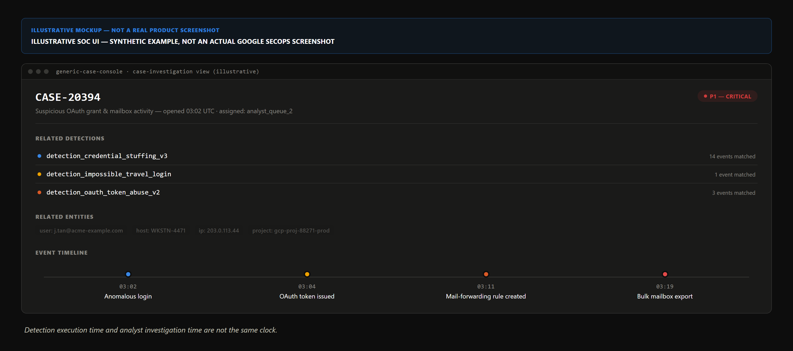

Google Security Operations — still widely called Chronicle — publishes an explicit five-phase lifecycle: Collect, Detect, Investigate, Respond, Manage/Monitor. Google's documentation never attaches a numeric time target to any phase — it describes sequence, not contractual speed.
Collect normalizes logs into the Unified Data Model. Detect correlates via YARA-L 2.0, curated packs, and threat-intel matching into an alert, not a case. Investigate hands off to a human — Section 4's investigation clock, started and stopped by analyst judgment alone. Respond runs SOAR playbooks, automated or approval-gated. Manage/Monitor tunes those rules from performance feedback.
A "case" isn't a fixed unit — it's a container that administrator-configured grouping and overflow settings roll alerts into. Too loose, unrelated volume collapses into one case; too tight, a real attack chain scatters unseen.
The sequence below is a composite, not a real breach, threaded through Figure 18.1: an anomalous login trips correlated credential-stuffing and impossible-travel rules, a follow-on OAuth grant, a mailbox-forwarding rule, and a bulk export each correlate against the same entities — grouping settings (18.2) decide whether they join one case — reading as one entity's access-persistence-exfiltration chain, not four isolated alerts.

Respond could revoke the grant, disable forwarding, and force a reset, automated or approval-gated by confidence; Manage/Monitor tightens or loosens the fired rules afterward.
Detection execution time is a compute-pipeline property, governed by ingestion latency and rule complexity. Investigation time is a human property — how long an analyst needs to establish scope and root cause with confidence. No vendor documentation reviewed here, Google's included, attaches a universal target to either, individually or combined. Blending "time to detect" and "time to investigate" into one SLA figure erases the distinction that determines who owns a delay.